Chapter 4 부록
4.1 SAS 갱신 매뉴얼
- 갱신 파일 저장
- 갱신 파일은 운영체제(32bit 혹은 64bit)에 맞는 파일을 선택해서 원하는 위치에 저장
- 시작 -> SAS 폴더 -> SAS 소프트웨어 갱신 또는 SAS 유틸리티의 라이선스 업데이트
- 해당 경로에 SAS 소프트웨어 갱신 파일이 없는 경우, 다음 경로로 이동하여 SASRenew.exe 실행 후 진행
C:\Program Files\SASHome\SASRenewalUtility\9.4 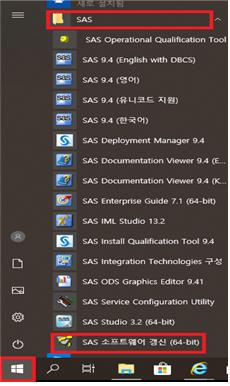
- Renew SAS Software 화면에서 찾아보기 클릭 -> 갱신할 라이선스 파일 지정

- 갱신파일이 위치한 곳에서 파일 찾아 열기
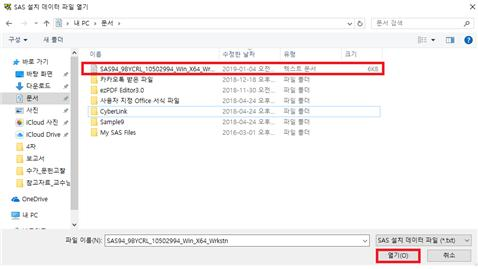
- 다음(N) -> SAS 설치 데이터 확인(만료일 확인) -> 확인 ->갱신


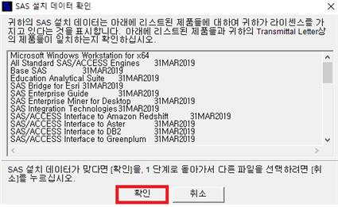
- 아래 창이 뜨면 갱신 성공
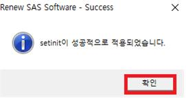
4.2 공단 및 심평원 자료신청 행정 절차
4.2.1 표본 코호트 2.0 DB
- 신청 흐름도

Step 1. 상세 신청 과정
- 자료원 신청은 공단홈페이지 https://nhiss.nhis.or.kr에 접속하여 회원가입 후 아래와 같은 절차를 따라 수행
- 상단에 데이터 신청 클릭 그 중 원하는 DB(예시로 표본연구DB) 클릭
- 좌측에 신청하기 클릭: (DB선택-> 신청서류작성-> 수령방법작성 -> 작성완료)
- 원하는 DB 선택 후 하위 내용 설정 (작성 후 하단에 신청서류작성 클릭)
- 신청서류작성 파트 작성

- 신청에 필요한 준비 자료
- IRB 승인번호, 승인기간, 유효기간, IRB 연구계획서, IRB 결과통지서 필요
- 학위논문목적 등록 시 재학증명서 및 학위논문 연구계획서
- 정책연구목적 등록 시 연구용역계약서
- 연구과제요약서, 개인정보이용동의는 신청절차 중 양식을 다운받아 작성 후 업로드
- IRB 승인번호, 승인기간, 유효기간, IRB 연구계획서, IRB 결과통지서 필요

- 참고 사항
- 연구기간은 최대한 넓게 설정하는 것이 좋음 (최대 IRB 승인 기간까지 가능하며, 원격 분석 사용 기간과 다름)
- 미리 작성해둔 코드나 더미테이블을 반입하기 위해 자료원 신청과정에서 미리 반입파일 등록이 필요. 신청과정 중 신청서류작성에 있으며 반입파일 항목에 파일업로드 (용량제한이 25MB로 있으니 가능한 압축을 통해 용량을 줄일 것)
- 연구기간은 최대한 넓게 설정하는 것이 좋음 (최대 IRB 승인 기간까지 가능하며, 원격 분석 사용 기간과 다름)
- 작성완료까지 작성 후 ‘본 내용을 충분히 검토하고 확인하였습니다’ 체크→ ‘공인인증 후 신청완료’ 클릭하여 공인인증 처리 후 신청완료
- 신청 후 심의절차를 거치게 되는데 이는 우측 상단 ‘MY서비스’를 클릭하여 확인가능
- ‘결제 대기 중’으로 바뀌면 상세화면으로 들어가 연구자별 서식(서약서, 보안각서, 보안서약서식) 다운로드 후 작성하여 ‘파일업로드’ → 온라인 비용 결제

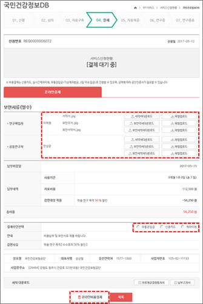
- ‘결제 대기중’이 ‘사용기간신청대기’로 바뀌면 클릭해서 다시 ‘원격연구분석 포털 바로가기’클릭
→ ’인증정보등록’ 클릭해서 SMS인증을 통해서 등록
→ ‘사용기간신청’을 클릭하여 원격연구 사용기간 설정

Step 2. 원격연구분석 프로그램
- 먼저 원격분석 프로그램을 다운받아야한다. 원격연구분석을 들어와 왼쪽에 있는 프로그램 설치를 클릭한다.
https://rdata.nhis.or.kr/bbs/pgm/pgmList.do
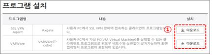
- 2개 파일을 모두 설치했다면 SSL-VPN에 접속하기 위해 AXGATE VPN Client를 실행
→ 원격연구 분석포털을 통해 신청한 아이디 비밀번호 입력
→ SMS를 통해서 본인인증절차 수행

1). 가상머신(Virtual Machine)이 실행 → SAS Enterprise Guide 7.1 선택
→ data_source 라이브러리의 데이터셋을 활용하여 분석 수행 
2). data_source의 데이터셋을 선택한 후 마우스 오른쪽 버튼클릭 → 복사 → working라이브러리에 붙여넣기 → working 라이브러리에서 분석실시 → 분석 완료 후 최종산출물에 대하여 data_out 라이브러리로 복사 - ※주의사항
1). 원격연구분석서비스 이용관련 정보는 원격연구분석포털(https://rdata.nhis.or.kr) 에서 확인
2). 인증정보등록은 원격연구를 신청한 모든 사용자(책임연구자, 공동연구자 등)가 등록해야 합니다.
3). 해당 연구의 책임연구자가 원격연구 사용기간을 신청 하실 수 있습니다.
4). 원격연구 사용기간은 연구기간을 초과하여 신청하실 수 없습니다.
5). 가상환경 사용자 초기 비밀번호는 국민건강보험 공유서비스 비밀번호와 같습니다.
Step 3. 반출
- 반출신청을 하기 전에 가상화 환경에 반출신청을 원하는 데이터를 data_out폴더에 옮겨야 함
● 폴더를 임의로 생성하는 것이 아닌 SAS 프로그램 내에서 라이브러리로 지정
● ex) ROOM053을 사용하는 사용자의 반출 라이브러리 지정 SAS 코드libname data_out “/userdata06/room053/data_out/data_out”;
● SAS 프로그램 내에서 생성된 폴더에 반출할 파일을 드래그 앤 드롭

- 아래와 같이 반출신청을 클릭 → data_out 폴더에 옮긴 반출파일명을 입력
※ 반드시 가상화 환경에 있는 파일과 동일한 파일명을 입력해야함
※ 파일명에 특수문자 및 공백이 있을 시 미승인 처리되므로 주의
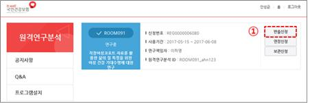

- 자료반출 현황 및 다운로드에서 자료반출 승인여부 확인가능
→ 승인이 되면 반출파일 다운로드 가능
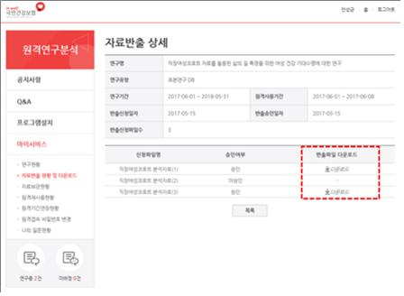
Step 4. 연장신청
- 해당 연구의 ‘연장신청’ 항목 클릭 → 사용기간선택 및 확인 → 결제
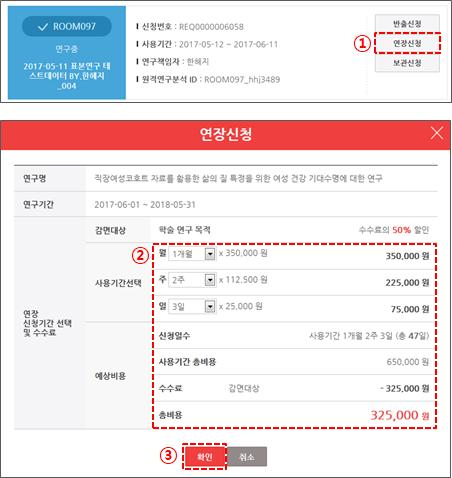
- 유의사항
● 원격연구 사용 중일 때 연장 신청 가능
● 연장 신청 후 고지서 발행(2~3일 소요)이 된 다음에 결제가 가능하므로, 사용 종료 시점 이전에 여유를 두고 연장 신청
● 계좌이체는 확인에 시일이 다소 소요되므로 종료 10일 이전 연장 신청 권장
● 카드결제는 사용기간 마지막 날에도 가능
● 사용 종료 후 일정 기간 동안은 재신청을 통해 원격연구 사용이 가능하나, 새로운 ROOM을 배정 받는 방식이므로 기존의 data를 사용하지 못함
→ ‘보관신청’을 이용하여 이어서 연구 가능
Step 5. 보관신청
- 아래와 같은 절차를 통해 보관 신청 가능
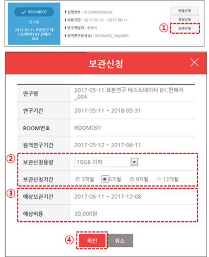
Step 6. 재사용 신청
- 아래와 같은 절차를 통해 재사용 신청 가능
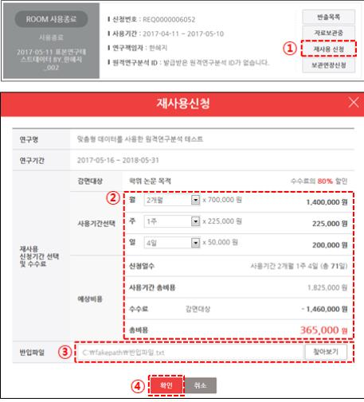
- 재사용 시 사용할 반입파일 첨부 가능
4.2.2 심평원 DB
- 신청 흐름도
1). 포털사이트 Ver.
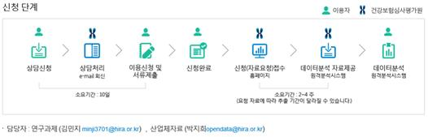
2). 사용자 매뉴얼 ver.

Step 2. 상담신청
- 보건의료빅데이터개방시스템 (http://opendata.hira.or.kr/) 접속
- ‘의료빅데이터 > 빅데이터분석 이용신청’ 클릭

- 빅데이터분석 이용신청 STEP에 따라 과제 정보 및 연구자 정보 기입

- 과제 정보는 IRB 연구계획서를 참고하여 작성하면 수월함

- 과제에 참여하는 연구원들은 모두 해당 포털의 ID 필요
- STEP 03 자료요청
1). 순서에 따라 연구에 필요한 변수 항목들을 체크하며 진행

2). 모든 항목의 작성이 완료되면 아래와 같은 팝업 생성
3). ‘상담신청’버튼을 눌러야 담당자에게 상담신청이 완료
→ ‘상담신청’버튼을 누른 뒤에는 담당자가 검토하기 전까지 수정 불가
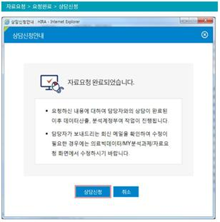
- 심평원 담당자의 검토 후 수정사항 또는 문의사항이 있을 경우 유선으로 연락이 옴
→ 검토 및 수정 완료 후 담당자가 메일로 회신

- 서류제출
1). 상담 완료 메일 수신 후 서류제출 버튼 활성화

2). 분석과제계획서 및 관련 자료 업로드
3). 필수 서류: 자료요청 공문, 연구과제수행개요서, IRB 승인 심의서, 보안 및 준수사항 확약서, IRB 승인된 연구계획서
4). 관련 서류 양식은 http://opendata.hira.or.kr/or/orb/useGdInfo.do#none 에서 다운로드 가능
- 포털의 ‘MY분석과제’에서 진행 상황 조회 가능
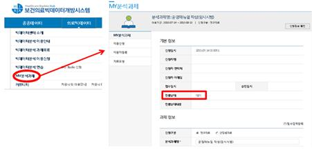
Step 3. 심평원에 자료 요청 공문 발송
- 행정 조교님께 메일로 공문 발송 요청
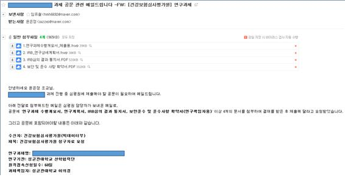
- 심평원에 발송된 산학협력단 공문 양식

Step 4. ‘자료요청에 대한 회신 및 수수료 납입’ 메일 확인
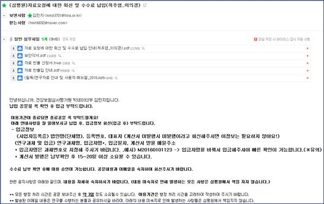
1. 메일에 포함된 내용 및 사용자 매뉴얼 숙지 필수!
- 계산서 발행 요청해야 비용처리 가능 (산학협력단 사업자등록증 필요)
Step 5. 수수료 납입 및 이용자 현황 공문 발송
- ‘자료 요청에 대한 회신 및 수수료 납입 안내’ 공문 내용

1). 수수료 납입은 계좌 이체만 가능
2). 납입 시 입금자 명은 과제번호 뒤 9자리 숫자로 변경하여 입금
3). 입금 후 입금 정보에 대한 메일 발송 필요 (계산서 발행 요청 포함)
4). 이용자 현황 공문과 보안각서 메일 발송

Step 6. 포털에 이용자 등록 및 보안각서 업로드

Step 7. 원격 접속 시스템 ID 발급
- 반드시 원격분석시스템을 이용하는 PC에서 신청
- 가상화신청까지 완료 후, 담당자(033-739-1059)에게 유선 연락하여 추가 승인 후 접속 가능

Step 8. 원격접속 통계분석시스템 (https://ras.hira.or.kr/)
- 가상화ID 신청 후, 원격접속 통계분석시스템(https:/ras.hira.or.kr)에 접속하여 인증서 발급
- 인증서 발급 완료 후, 가상화ID와 인증서를 통해 원격접속통계분석시스템에 접속

원격접속 통계분석시스템 설치→ 팝업 뜨는 항목들 모두 허용 및 설치
설치 과정에서 어려움이 있을 경우 매뉴얼 참조 및 031-290-4386 으로 문의
가상화 PC 접속 및 이용


Step 10. 자료반출 신청 (http://opendata.hira.or.kr/)
- ‘MY분석과제’ 탭에서 반출신청 가능
- 원격접속 통계분석시스템의 G: dataout 폴더에 삽입한 파일들이 ‘가상PC파일목록’에 뜨므로 반출을 원하는 파일들을 체크하여 신청
- 공공데이터반출신청서 다운로드 후 작성하여 ‘관련자료’에 업로드
- 신청사유는 적당히 성의껏 작성 (너무 간단하면 반려)
- 환자식별코드(JID) 등이 포함된 자료일 경우 무조건 반려
- 반려사유가 없을 시, 반출에는 3~5일정도 소요
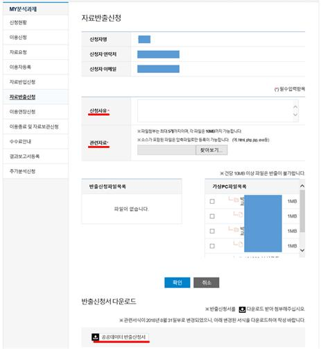
Step 11. 이용연장신청 (http://opendata.hira.or.kr/)
- ‘MY분석과제’ 탭에서 이용연장신청 가능

- 연장신청은 원격이용 종료 10일 이내에 공문으로 신청
→ 공문 발행까지 소요되는 시간을 고려하면 연장 여부는 종료 2주전까지 결정 권장
- 사용연장 신청을 위한 공문 필요
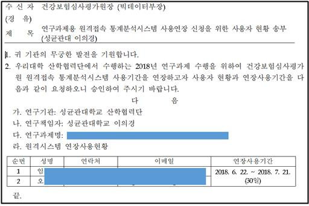
- 수수료 납입 안내 메일 회신 후 수수료 납입
Step 12. 자료이용 종료 및 보관
- ‘MY분석과제’ 탭에서 신청 가능
- 원격접속시스템 이용종료 및 자료보관 요청에 관한 공문을 발송
- 10GB 이하 파일의 자료를 보관 요청 가능
- 이용기간이 종료된 후 1주일 안으로 종료공문 회신
회신이 없을 경우는 자료를 삭제해도 되는 것으로 판단하여 삭제 처리
Step 13. 추가분석 신청
- ‘MY분석과제’ 탭에서 신청 가능
- 이용시작 최소 15일 전에 공문으로 신청
- 업무 흐름
추가분석 공문요청(연구자) -> 수수료납입 공문 통보(심평원) -> 수수료 납입(연구자)
-> 이용기간설정* 공문(연구자) -> 승인(심평원)
4.3 약가파일
약가파일이란?
- 특정 기간에 급여되는 의약품의 제품코드를 비롯한 관련 정보와 변동이력을 한 파일에서 확인할 수 있음
- 건강보험심사평가원 내에 “약가파일”로 검색 혹은 홈>제도·정책>보험인정기준>보험인정기준에서 “< 약가> 16.03.01.~19.03.01. 현재 적용 약가파일” 과 같은 이름의 파일이 제공됨
※ 일부 약제에 대한 정보조회
- https://www.hira.or.kr/rf/medicine/getHistoryList.do?pgmid=HIRAA030035020000 에서 다운가능하며, 약품정보 및 적용개시일 적용한 후 엑셀 다운로드 (다운로드 시 모든 탭의 정보가 함께 다운됨)
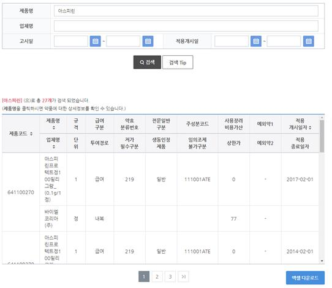
- 포함된 표는 아래와 같음 (아래 내용 외에 저가필수구분, 전문일반구분, 생동인정제품, 임의조제불가구분, 사용장려비용가산, 예외약1, 예외약2)
- 동일한 제품코드의 아스피린프로텍트의 적용개시일자 별 정보가 나열됨.
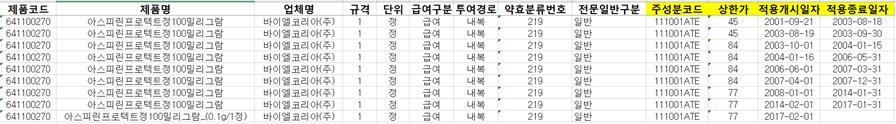
- 특정 주성분코드, 혹은 제품의 약가 변동까지의 시기, 변화하는 약가 등을 추적할 수 있음
- 예: 박혜선 (2019) 박사학위논문 참고